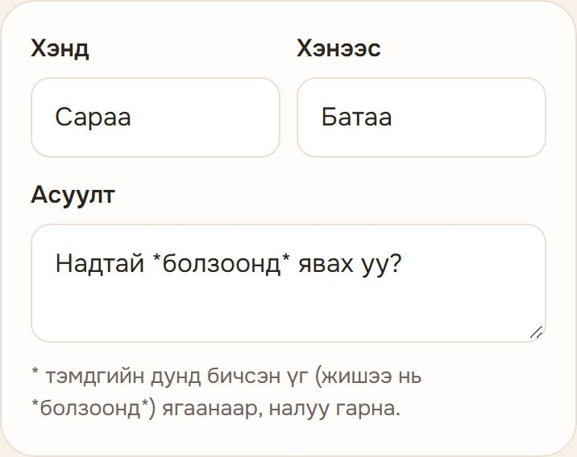
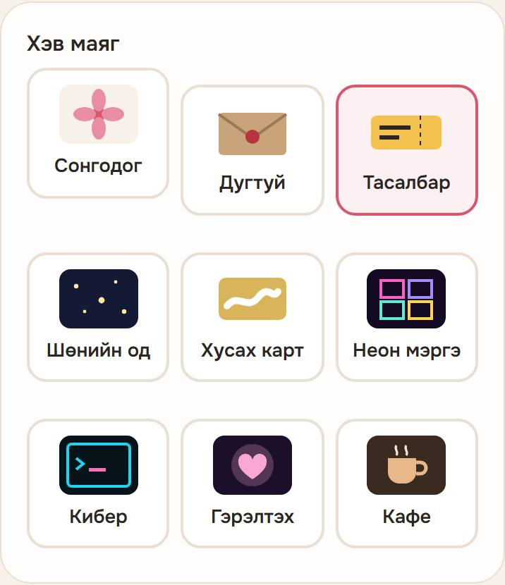
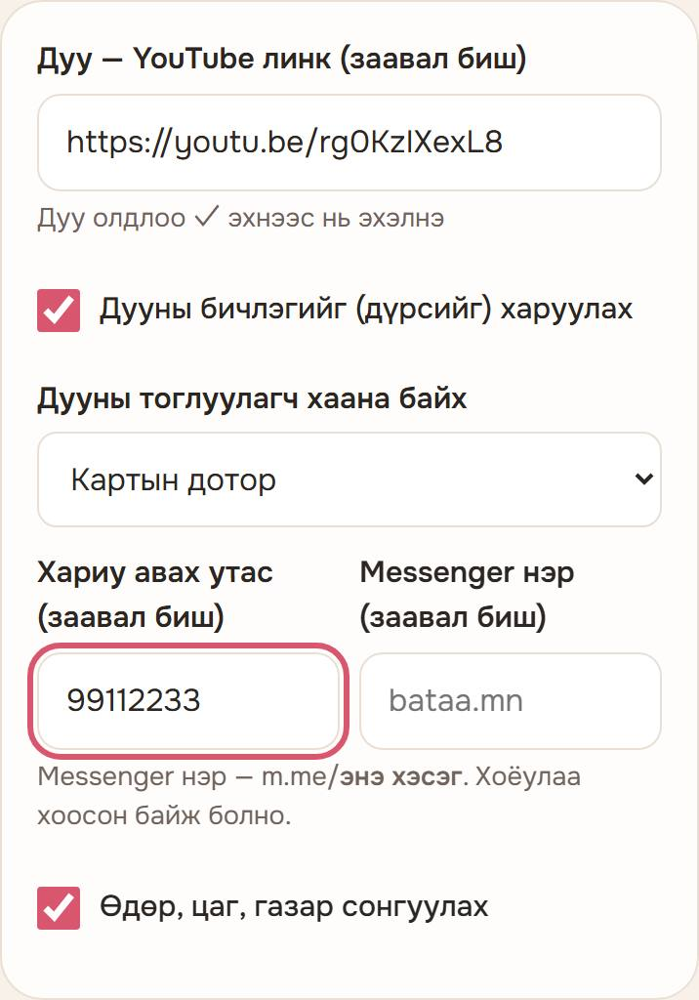
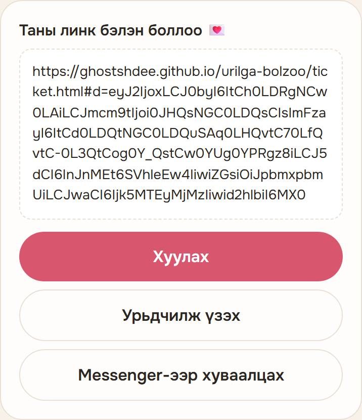
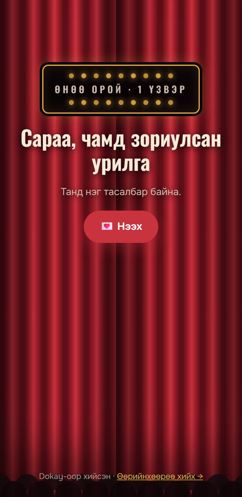

Болзооны урилга яаж хийх вэ
Утсан дээрээ 2 минутад. Бүртгэл, апп, төлбөр хэрэггүй.
Урилга хийх хуудсыг нээх1Нэрээ бич
- Хэнд — урих хүнийхээ нэр. Заавал бичнэ.
- Хэнээс — өөрийн нэр. Хоосон орхивол «Нууц хүн 🤫» гэж гарна.
- Асуулт — өөрийнхөөрөө сольж болно, эсвэл хэвээр нь үлдээ.

2Хэв маягаа сонго
Жижиг зургуудаас таалагдсан нэг дээрээ дар. Сонгосон нь ягаан хүрээтэй болно.

3Дуу, утсаа нэм
Хоёулаа заавал биш. Алгасаж болно.
- Дуу: YouTube апп-аар дуугаа нээ → Хуваалцах (Share) → Линк хуулах (Copy link) → «Дуу» нүдэнд удаан дараад Буулгах (Paste).
- Доор нь «Дуу олдлоо ✓» гэж гарвал болсон.
- Хариу авах утас эсвэл Messenger нэр бичвэл хариуг чам руу хялбар илгээнэ.

4Линкээ гаргаад илгээ
- Хамгийн доорх «Линк гаргах» товчийг дар.
- «Урьдчилж үзэх» дарж хэрхэн харагдахыг шалга.
- «Хуулах» дараад Messenger-ээр урих хүндээ илгээ.
Линк урт байх нь хэвийн. Бүтнээр нь хуулж илгээ.

5Урилга ингэж нээгдэнэ
Линкээр орсон хүн урилгаа нээж, хариугаа сонгоно. Энэ зураг дээр «Тасалбар» хэв маяг харагдаж байна.

Түгээмэл асуулт
«Линк гаргах» дарахад юу ч болохгүй байна
Өмнө нь энэ товч түр ажиллахгүй байсан, одоо засагдсан. Хуудсаа шинэчлээд дахин оролдоно уу. «Хэнд» нүд хоосон байвал линк гарахгүй.
Дуу өөрөө эхлэхгүй байна
Утас дууг автоматаар тоглуулахыг хаадаг. Урилга нээсэн хүн «▶ Дууг сонсох» товч дарна.
«Энэ YouTube линкийг танисангүй» гэж гарлаа
YouTube-ээс «Линк хуулах»-аар дахин хуулж оруул. Эсвэл нүдийг хоосон орхиод дуугүй илгээж болно.
Миний мэдээлэл хаана хадгалагдах вэ?
Серверт хадгалагдахгүй, линк дотроо л явна. Гэхдээ линктэй хүн бүр дотор нь бичсэн утасны дугаарыг харж чадна, тиймээс линкээ зөвхөн урих хүндээ илгээ.